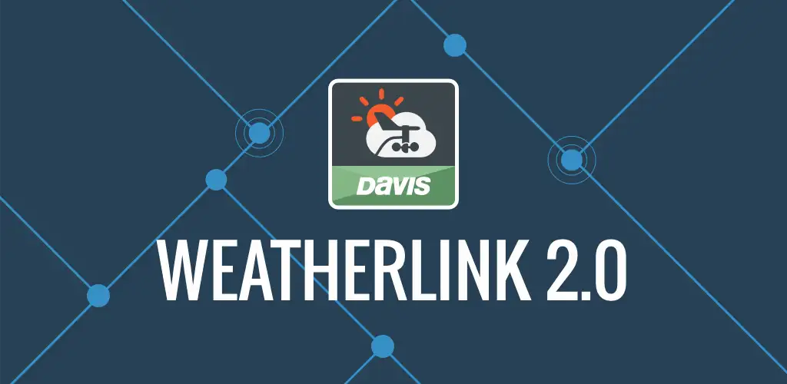
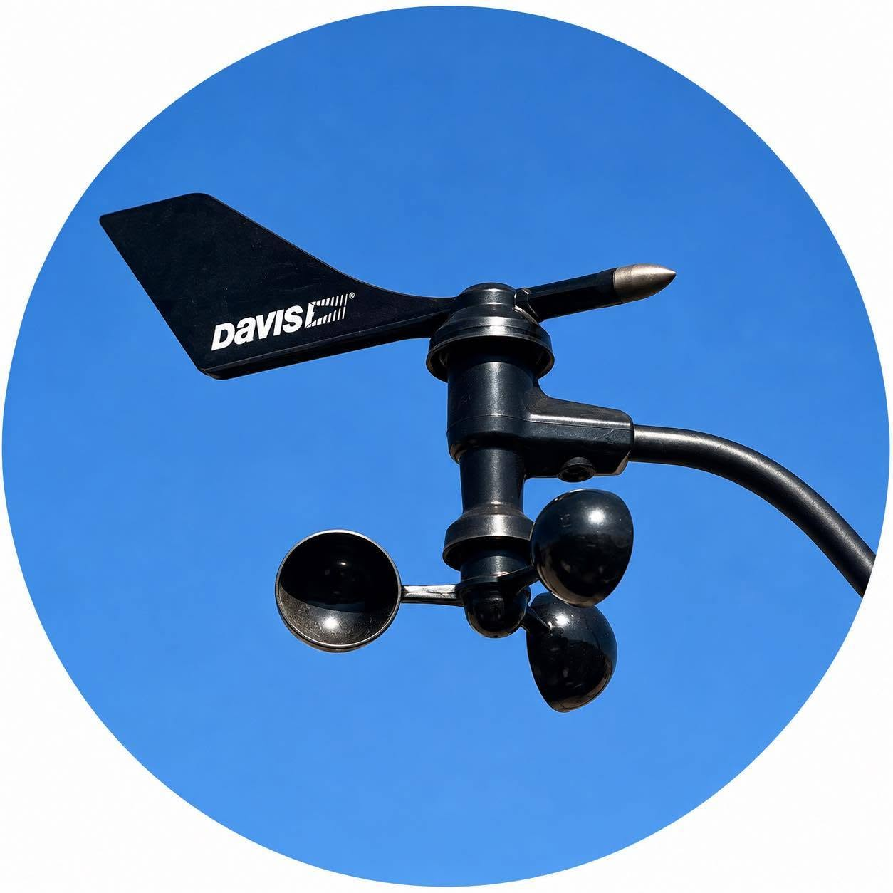

MeteoTetuán
Datos actuales Online
Estación de Madrid-Tetuán en tiempo real
Webcam en directo

Radar y satélite


Mapa meteorológico
Previsión
La estación meteorológica
MeteoTetuán es un observatorio meteorológico situado
en el distrito de Tetuán, Madrid. La estación
es un modelo Davis Vantage Pro2 Plus autoaspirada, que registra
temperatura, humedad, viento, precipitación, radiación solar
e índice ultravioleta. Además, el observatorio cuenta con un sensor Airlink instalado, encargado de medir la calidad del aire. Todos los sensores se conectan al datalogger WeatherLink Live, que funciona como "hub" de datos y almacena la información de los sensores en WeatherLink.com (versión PRO) en intervalos de 15 minutos. La estación se complementa, además con una webcam modelo Foscam enfocada al sur, un sensor de rayos Ecowitt encargado de la detección de tormentas, y un pluviómetro manual CoCoRaHS, utilizado para cotejar
las cantidades de precipitación registradas por la estación
automática. El observatorio cuenta también con la Consola WeatherLink para la visualización local de los datos.
Haz click en las fotografías para ampliarlas
MeteoTetuán en las principales redes meteorológicas
Acceso directo a datos y gráficos completos de MeteoTetuán

Enlaces y archivo climático
Observación
Archivo climático de MeteoTetuán
Últimas publicaciones
Web actualizada automáticamente cada minuto mediante WeatherLink Live y WeatherLink.com.


Web alojada en: